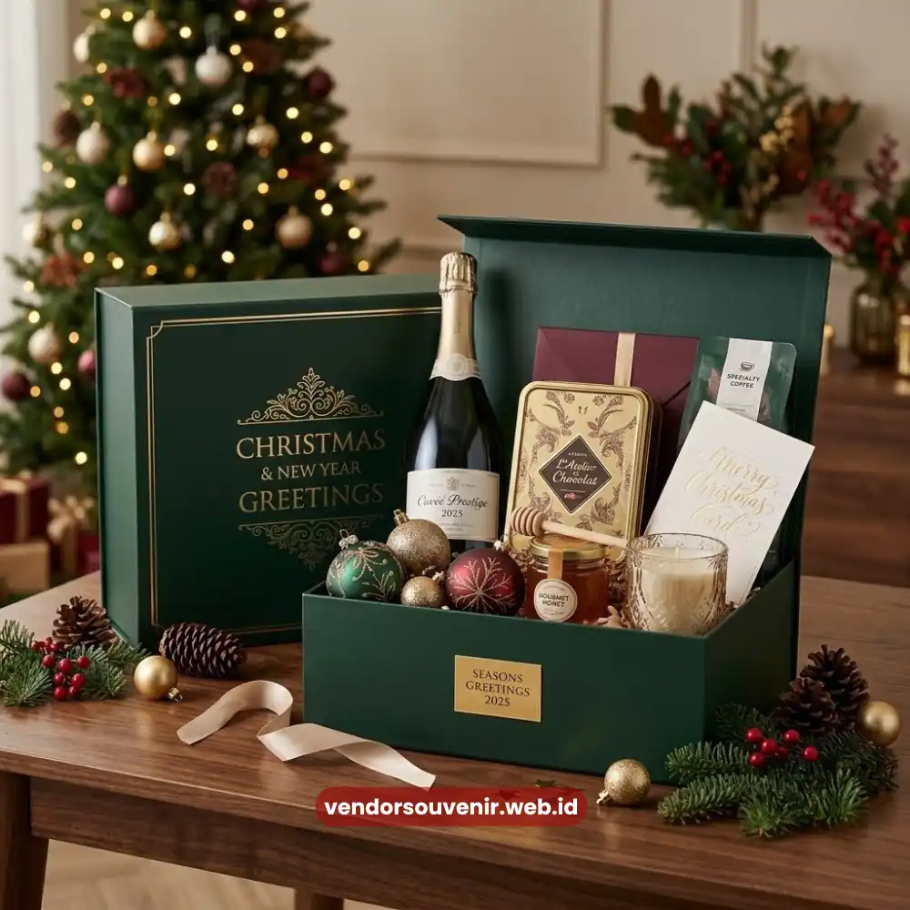

Daftar Isi
Hampers Natal dan tahun baru untuk karyawan adalah paket hadiah akhir tahun berisi kombinasi makanan, minuman, atau produk fungsional yang diberikan perusahaan sebagai bentuk apresiasi atas kinerja karyawan sepanjang tahun.
Momen ini penting karena menjadi salah satu bentuk penghargaan yang paling dinantikan karyawan menjelang pergantian tahun. Kemasan hampers yang dirancang menarik turut memperkuat kesan perhatian perusahaan terhadap kesejahteraan timnya.
- Hampers akhir tahun menjadi bentuk apresiasi yang paling ditunggu karyawan.
- Isi hampers idealnya menggabungkan unsur konsumsi dan unsur fungsional.
- Kemasan yang menarik memperkuat kesan perhatian perusahaan.
- Waktu pembagian sebaiknya dilakukan menjelang libur akhir tahun.
- Vendor Souvenir menyediakan hampers custom logo untuk kebutuhan korporat.
Apa Itu Hampers Natal dan Tahun Baru untuk Karyawan?
Hampers Natal dan tahun baru untuk karyawan merupakan bentuk apresiasi tahunan yang biasanya dibagikan menjelang libur panjang akhir tahun. Berbeda dengan bonus dalam bentuk uang, hampers memberikan pengalaman fisik yang lebih personal dan dapat dinikmati bersama keluarga karyawan di rumah.
Tradisi ini banyak diadopsi perusahaan sebagai cara menutup tahun kerja dengan kesan positif, sekaligus menjadi momentum membangun semangat karyawan menjelang tahun kerja berikutnya.
Mengapa Perusahaan Memberikan Hampers kepada Karyawan Setiap Akhir Tahun?
Pemberian hampers akhir tahun berfungsi sebagai simbol penghargaan atas kontribusi karyawan sepanjang tahun berjalan. Selain sebagai bentuk apresiasi, hampers juga membantu menciptakan ikatan emosional antara karyawan dan perusahaan, yang pada akhirnya dapat berkontribusi terhadap tingkat loyalitas dan motivasi kerja di tahun berikutnya.
Momen ini juga sering dimanfaatkan perusahaan untuk memperkuat budaya kerja yang positif, terutama pada divisi dengan beban kerja tinggi sepanjang tahun, sebagai bentuk pengakuan atas dedikasi tim.

Corporate New Years Hampers Premium
Apa Saja Isi Hampers yang Ideal untuk Karyawan?
Isi hampers idealnya menggabungkan unsur konsumsi dan unsur fungsional agar dapat dinikmati langsung maupun digunakan dalam jangka panjang. Kombinasi umum meliputi makanan ringan premium, minuman kemasan eksklusif, serta produk fungsional seperti mug custom atau agenda tahun baru.
Penambahan kartu ucapan dengan pesan personal dari manajemen turut memperkuat kesan hangat dari hampers tersebut, membuat karyawan merasa dihargai secara individual, bukan hanya sebagai bagian dari kebijakan rutin tahunan.
Bagaimana Menyesuaikan Isi Hampers dengan Anggaran Perusahaan?
Penyesuaian anggaran dapat dilakukan dengan menentukan proporsi antara item konsumsi dan item fungsional. Untuk anggaran terbatas, kombinasi makanan ringan dan minuman kemasan sudah cukup memberi kesan positif. Untuk anggaran lebih besar, penambahan produk fungsional seperti tumbler atau planner tahunan dapat meningkatkan nilai persepsi hampers secara keseluruhan.
Pendekatan bertahap ini memungkinkan perusahaan tetap memberikan apresiasi yang layak tanpa harus melebihi kapasitas anggaran tahunan yang telah ditetapkan.
Mengapa Kemasan Hampers Memengaruhi Kesan Penerima?
Kemasan menjadi elemen pertama yang dilihat karyawan sebelum membuka isi hampers, sehingga turut menentukan kesan awal terhadap hadiah tersebut. Kemasan yang rapi dengan nuansa warna khas akhir tahun, seperti merah, hijau, atau emas, dapat memperkuat suasana perayaan sekaligus mencerminkan standar kualitas perusahaan pemberi.

Hadiah Souvenir untuk Kebutuhan Korporat
Kapan Waktu Terbaik Membagikan Hampers Natal dan Tahun Baru kepada Karyawan?
Waktu yang umum digunakan adalah satu hingga dua minggu sebelum libur akhir tahun dimulai, sehingga karyawan masih memiliki waktu untuk menikmati isi hampers bersama keluarga sebelum kembali bekerja. Pembagian yang terlalu mepet dengan hari libur berisiko membuat momentum apresiasi kurang terasa maksimal.
Perencanaan waktu produksi dan distribusi hampers juga perlu dipersiapkan jauh sebelumnya, mengingat periode akhir tahun umumnya menjadi masa tersibuk bagi penyedia hampers korporat.
Hampers Natal dan tahun baru untuk karyawan merupakan investasi sederhana namun berdampak besar terhadap loyalitas dan semangat kerja tim di tahun berikutnya. Kombinasi isi yang tepat, kemasan yang menarik, serta waktu pembagian yang pas menjadi kunci keberhasilan program apresiasi akhir tahun ini.
Vendor Souvenir siap membantu perusahaan Anda menyiapkan hampers akhir tahun yang custom logo dan sesuai anggaran. Kunjungi vendorsouvenir.web.id sekarang untuk konsultasi kebutuhan hampers Natal dan tahun baru perusahaan Anda.
Maroon Souvenir
Partner Corporate Gift terpercaya di Indonesia. Berpengalaman melayani ratusan perusahaan sejak 2018.
Lihat Portofolio Kami